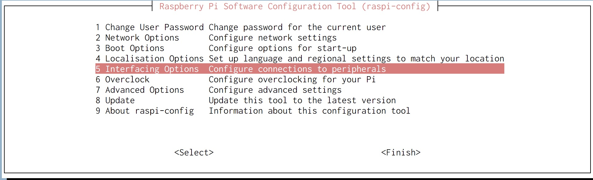
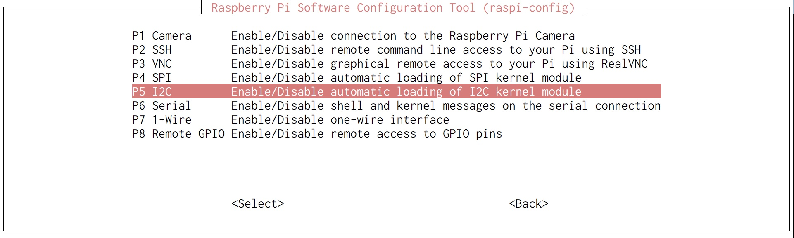

- Fri 23 March 2018
- raspberrypi
- mani3
- #raspberry pi
前準備
$ sudo apt-get -y update
$ sudo apt-get -y upgrade
$ sudo apt-get install -y python-smbus i2c-tools
照度センサー
I2C を有効にする
$ sudo raspi-config
// 設定できたら再起動
$ sudo reboot
 
/boot/config.txt の 差分
$ diff /boot/config.txt /boot/config.txt.origin
46c46
< dtparam=i2c_arm=on
---
> #dtparam=i2c_arm=on
ここにある通り配線してから、
i2cdetect を叩いてデバイスのアドレス 0x23 を確認する
$ i2cdetect -y 1
0 1 2 3 4 5 6 7 8 9 a b c d e f
00: -- -- -- -- -- -- -- -- -- -- -- -- --
10: -- -- -- -- -- -- -- -- -- -- -- -- -- -- -- --
20: -- -- -- 23 -- -- -- -- -- -- -- -- -- -- -- --
30: -- -- -- -- -- -- -- -- -- -- -- -- -- -- -- --
40: -- -- -- -- -- -- -- -- -- -- -- -- -- -- -- --
50: -- -- -- -- -- -- -- -- -- -- -- -- -- -- -- --
60: -- -- -- -- -- -- -- -- -- -- -- -- -- -- -- --
70: -- -- -- -- -- -- -- --
サンプルコードを実行
// サンプルコードをダウンロード
$ wget https://bitbucket.org/MattHawkinsUK/rpispy-misc/raw/master/python/bh1750.py
// サンプルコードを実行
$ python bh1750.py
Light Level : 0.0 lux
Light Level : 10.0 lux
Light Level : 10.0 lux
Light Level : 10.0 lux
Light Level : 10.0 lux
Light Level : 10.0 lux
Light Level : 10.0 lux
Light Level : 7.5 lux
Light Level : 7.5 lux
Light Level : 5.83333333333 lux
Light Level : 5.83333333333 lux
Light Level : 248.333333333 lux
Light Level : 254.166666667 lux
Light Level : 255.0 lux
Light Level : 268.333333333 lux
Light Level : 273.333333333 lux
Light Level : 274.166666667 lux
Light Level : 268.333333333 lux
参考
- https://www.raspberrypi-spy.co.uk/2015/03/bh1750fvi-i2c-digital-light-intensity-sensor/